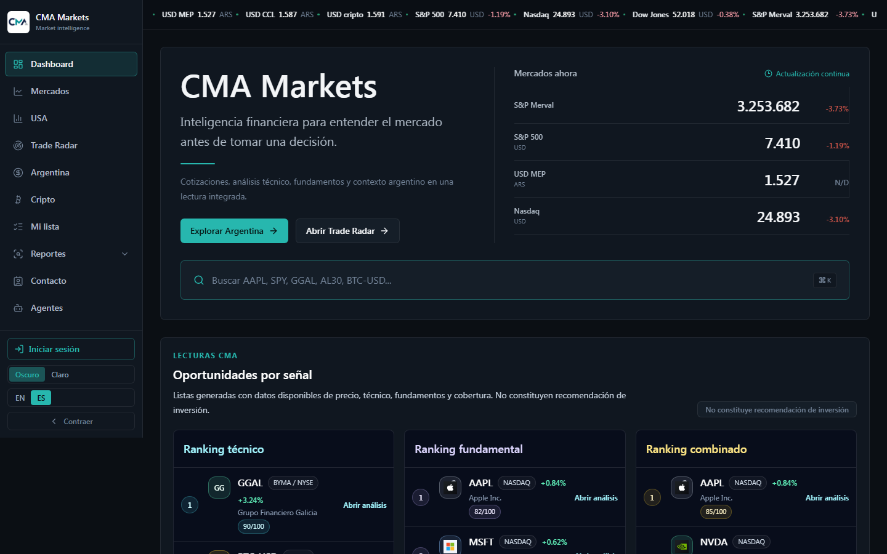
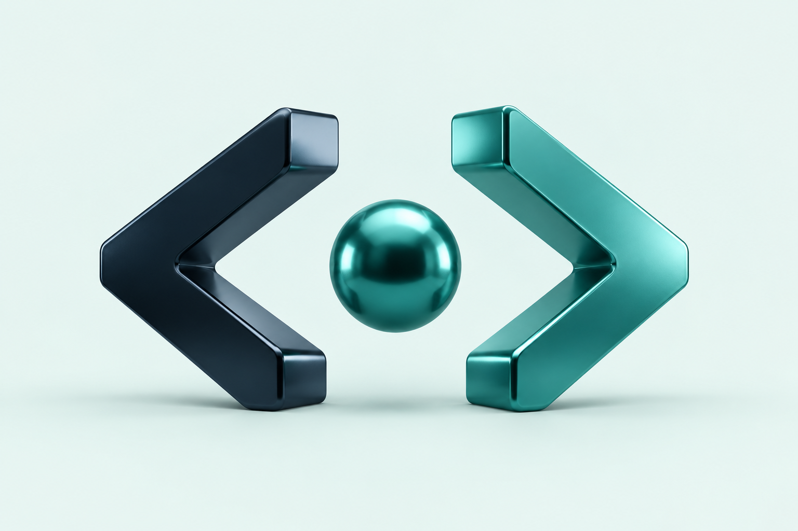
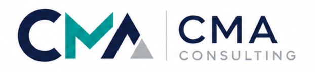

DATOS · PRODUCTO PROPIO EN DESARROLLO
CMA Markets
Mercados, activos e información financiera reunidos en un dashboard de análisis.
Creamos sitios web, herramientas de gestión y soluciones con datos e IA. De la idea a una herramienta que podés usar.

Tecnología aplicada a lo que tu empresa necesita resolver. Empezamos por algo concreto y lo hacemos crecer con vos.
Casos aplicados y productos propios.
Explorá las soluciones en funcionamiento.
cma_source es la unidad de soluciones digitales de CMA Consulting. Combinamos la mirada del negocio con la capacidad de construir herramientas que ayuden a resolverlo.
Conocé CMA Consulting
Entender primero.
Construir con propósito.
Un proceso cercano, con alcance claro y avances que podés ver.
Conversamos sobre tu negocio, el problema y tus prioridades. Definimos qué conviene resolver primero.
Acordamos alcance y etapas. Desarrollamos una solución que podés revisar antes de ponerla en marcha.
Publicamos, explicamos cómo usarla y acordamos el acompañamiento y las mejoras que necesites.
No hace falta tener todo definido. Contanos qué querés mejorar y pensemos una solución posible.
Escribinos por emailDesde San Luis, Argentina. Trabajo remoto.